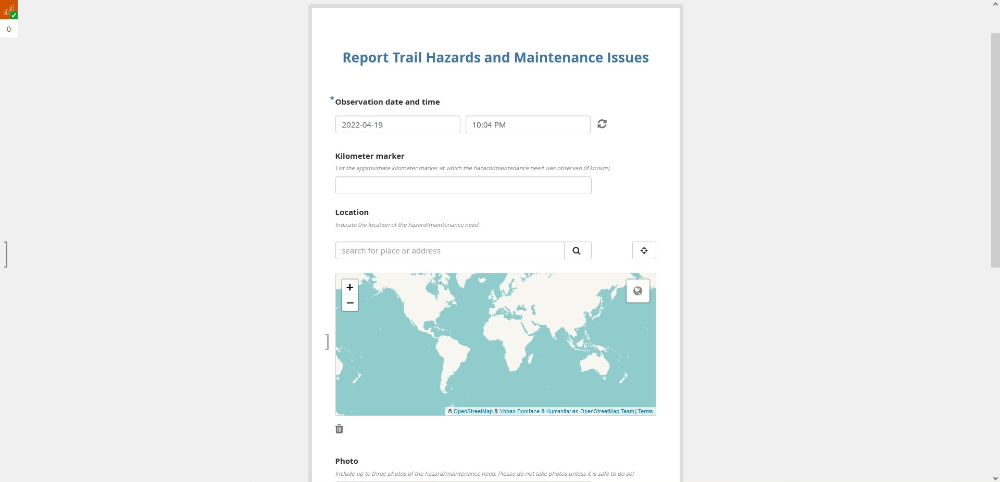
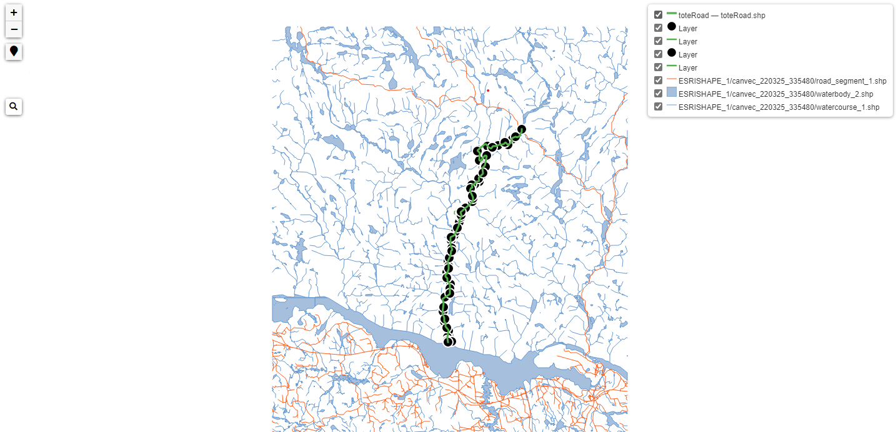

OUR TRIALS
To provide our client with an open-source data collection form and interactive web map, we explored several options. Our process and findings are detailed below.
Survey 123
ArcGIS Survey123 is a complete solution for creating, sharing and analyzing surveys and form records. You can collect data via the web or mobile devices, and the forms are
fillable even without an internet connection. Data collected via Survey123 is immediately accessible across all ArcGIS services, along with many of Esri's other field-based
applications. Your form's results can be analyzed quickly directly after collection through graphs and maps available via the Analyze and Data tabs.
The Process:
- Sign into ArcGIS services and launch either the Survey123 website or the Survey123 Connect desktop application.
- Create a new form from a previously created XLSForm, from a template, or completely from scratch.
- Use the survey creation tab to customize the form's colours, background, and question styles to your suitability.
- After the form is complete, set sharing to accommodate your submission needs and then publish the form.
This can be integrated either via an external URL or embeddable code to be used within your website.
Lessons Learned:
Benefits
- Forms can be designed via Survey123 website or the ArcGIS Survey123 Connect desktop application.
- Embeddable form code.
- Esri has many help resources and training available on the creation and upkeep of forms and data storage.
- Many templates and form customization options are available.
Shortcomings
- Using the service requires an Esri license by the survey administrator.
- Desktop application is required to work with XLSForms.
Takeaways
For our collaborative project, we have decided not to use Survey123 due to the client's need for open-source solutions. They do not have an Esri license
and so would not be able to access the form or any of the data collected after completion of the academic side of the project.
KoboToolbox
KoBoToolbox is a free and open-source suite of tools for field data collection for use in challenging environments. It allows the user to collect data using mobile devices as
well as computers, offering support through the KoBoCollect mobile app and Enketo web forms. These forms are optimized for use by humanitarian organizations and hazardous field
environments, designed to collect reliable information quickly following a crisis. Their interface for form creation is simplified and easily navigable to appeal to any user.
The Process:
- Create a research KoBoToolbox account. All form creation takes place through their website.
- Create a new form from a previously created XLSForm, from a previously generated template, or completely from scratch.
- Use Enketo-based formatting on the note sections of each question to add any additional information or elements to the form.
- After the form is complete, set sharing to accommodate your submission needs and then deploy the form.
This can be integrated either via an external URL or embeddable code to be used within your website.

Lessons Learned:
Benefits
- Does not require any additional software or a license.
- Offers a free solution for data collection and analysis.
- Simple embeddable form code for web integration.
- KoBoToolbox and Enketo both offer help documentation and test forms to demonstrate form design and implementation.
Shortcomings
- The forms are mildly customizable, which may deter users who would like a more detailed or graphically pleasing form.
- Forms do not work in private browsing mode.
- If importing from an XLSForm, any Esri fields must be removed before import –
these fields bind the form to only Esri products and will fully prevent the form from being deployed.
Takeaways
For our collaborative project, we will use KoBoToolbox to design two custom forms for use by our client: one will be integrated into the website
for future data collection by trail users, and one will be for use by the organization's volunteers and distributed separately.
Leaflet
Leaflet is a lightweight, mobile-friendly, open-source JavaScript library for customizing interactive maps.
Leaflet supports HTML5 and CSS3, and the interface also works with numerous web mapping applications such as
Google Maps API, Mapbox, and OpenStreetMap. Designed with simplicity in mind, its source code is easily readable and simple to work with.
Leaflet also supports many file formats including shapefiles, GeoJSON, and KML.
Working with KML data
The Process:
- Use the provided KML file format and initiate a new ArcGIS Pro session.
- Through ArcGIS Pro, apply new symbology to the current point and line features in the KML files and save them in a folder outside of the Geodatabase.
- Work through GitHub to create an account, a working repository, and html page to host the web map.
- upload any KML files needed for the web map to a separate folder stored on GitHub.
- Using Open Street Map locate a study area for the base map and record the URL, coordinates, zoom levels. (An alternative to this would be downloading the base tile and hosting a server using a docker file over GitHub)
- Create a new map using Leaflet and the Open Street Map tile chosen above.
- Implement Leaflet JavaScript API coding on the GitHub HTML page and include code to link the Open Street Map tile in with a URL.
- Add a line of code to add Leaflet KML JavaScript libraries to allow the use of KML files.
- Implement Leaflet Java script API to show the KML files over the Open Street Map base tile.
- Continue implementing different leaflet coding to further the web map features (adding search, toggle, and pop ups.)
Working with GeoJSON data
The Process:
- Convert shapefile or KML data to GeoJSON.
- Evaluate and edit the non-spatial attributes using geojson.io and download the updated file.
- Download and use the AJAX plugin for Leaflet that will allow you to call GeoJSON data from an external file rather than having to embed it directly into your HTML/JS framework.
- Create a new map object using Leaflet and set extents and zoom level.
- Choose a tile provider to form the base of the map. We have tried using a customized Mapbox tile, a simple OSM tile and other open-source tiles. The example below uses a tile called OpenTopoMap.
- Add a new GeoJSON data layer using the Leaflet AJAX commands.
- Use filters to select a subset of the GeoJSON point data, style it according to its attributes and access its properties to bind popups to the points.
- Use Leaflet’s layer control to allow users to toggle layers on and off on the map.
- Download and use the Search Control plugin for Leaflet to allow users to search for features on the map and zoom to the selected result.
Try searching the keywords 'camp' or 'km' on the map below and toggle the layers on and off!
Lessons Learned:
Benefits
- GeoJSON’s structure makes it easy to edit and add properties and non-spatial attributes to the data. This is especially helpful for popup displays, searching keywords and filtering.
- There is a substantial number of resources available to help integrate GeoJSON data on a Leaflet map and make it interactive, like the plugins mentioned in the process steps above.
- Leaflet is designed to work with GeoJSON; it automatically recognizes the structure of the spatial properties.
- Leaflet is a powerful tool for web mapping and customization with many tutorials, functions and features to experiment with.
- It is extremely simple to swap base map tiles in and out of the script because it only requires one line of code. We have successfully used OSM, custom Mapbox and other tiles in our maps.
Shortcomings
- Adding functionality to a map using Leaflet requires a significant amount of JavaScript programming, which has been a challenge and will require a lot of effort to master.
- As Leaflet is open source, its documentation and resources are not the most detailed or complete. Researching GIS forums is often required to understand the more complex concepts.
- KMZ files are difficult to override styling using leaflet, and had to be done through ArcGIS Pro.
- KMZ file line features appear to have polygons reflecting where the linear feature bends, and coding does not override this.
Takeaways
For our collaborative project, we will use Leaflet as a solution. It is a simple customizable JavaScript library offering a variety of the functions and features needed to implement our web map solutions.
Our group has also decided against working with KML files, and to convert any KML files into GeoJSON format. After extensive testing with KML files in multiple platforms it proved to be extremely difficult
and arose more problems than working with the GeoJSON file format. GeoJSON files are easily editable and will allow us to add attributes necessary for designing popups, search bars and other layer functionality.
Mapbox
Mapbox is an open-source provider of impressive custom maps, has created and contributed to several high-performance mapping libraries like Mapbox GL-JS and Leaflet;
and has an application called Mapbox Studio for managing your own geospatial data and designing maps.
Compared to other options explored here, Mapbox offers a GUI to manage data on a web map while simultaneously providing beautiful base map tiles to work with.
The Process:
- Create a free Mapbox account and generate an API access token to use on your webpage.
- Open the Mapbox Studio application and create a new style, either by using a predefined map template or starting from an empty map.
- Use the Mapbox Studio application to customize the base map's colors, features, text and more to meet your needs.
- To add your own data to the map, go to Mapbox Studio’s Datasets page and create a new dataset. This opens another application that allows you to draw new features or upload existing data in GeoJSON, JSON or csv format.
- After exporting your data, it can be added to your custom map from the layers tab of the Mapbox Studio Styles application where custom styling of your point, line and polygon data can be done.
- The same data creation process can be used to add place labels to the map that are not included in the default Mapbox placenames layer.
- With your map complete, it is ready to be published and shared using an integration url that can be accessed in your website using Mapbox GL-JS or Leaflet.
Lessons Learned:
Benefits
- Provides users with the opportunity to customize and design maps to suit their needs.
- Does not require any programming for the map design itself.
- Allows 50’000 free map loads and 200’000 free static tile requests per month, which is suitable for clients looking for low-cost web mapping solutions.
- Easy data integration with the map
- Mapbox offers detailed tutorials and documentation to support users throughout the design and implementation process.
Shortcomings
- The interactivity of the map must be programmed using Mapbox GL-JS or Leaflet, which proved to be a steep learning curve.
- Requires a Mapbox account and API token, which may be a deterrent to some clients.
Takeaways
For our collaborative project, we will design a custom Mapbox base map to use in our interactive map, however, since we have dedicated more time to learning Leaflet and GeoJSON, we will keep our trail data separate from Mapbox.
Using Mapbox simply for the basemap will make the map easier to update should we or our client need to make changes to our GeoJSON trail data. Ideally, the Mapbox basemap
will not need to be adjusted once we hand off the project because our client is not experienced with the platform. We are looking forward to exploring all the design options available
within Mapbox Studio to make our trail's basemap attractive and informative.
QGIS
QGIS is a free open-source GIS desktop application. It has similar functionality and setup as ESRI’s “ArcMap” but offering a free solution for data analysis and limited geoprocessing options. QGIS gives the option to produce three different web maps with the downloadable QGIS2Web plugin, including Mapbox GL JS, Leaflet, and OpenLayers.
The Process:
- Download the Free QGIS for desktop application
- Import, analyze, process, and stylize data to form an appropriate base map.
- Download QGIS2Web plugin within QGIS which allows the creation of web maps
- Once downloaded use the extensions toolbar to locate the QGIS2Web plugin to create a web map.
- Choose one of the following export methods for the web map; Mapbox GL JS, Leaflet, and OpenLayers.
- Follow through the tabs, filling out requirements for pop ups, visible layer toggling, zoom, search and more.
- Finally, export your map using the method and folder location of your choice. The map will export as a series of folders.
- Upload the folders to your personal GitHub repository and use the index.html page to view the web map.

Lessons Learned:
Benefits
- Provides users with a free open-source desktop application with the capability of producing a base web map.
- Does not require programming to create the base map.
- Offers a free solution for geoprocessing and data analysis.
- Provides the user with the ability to export a web map in 3 different formats (Mapbox GL JS, Leaflet, and OpenLayers).
- Exporting web maps with minimal styling that can be hosted in GitHub
- Producing pop ups and the layer toggling abilities within the desktop software
Shortcomings
- The desktop application had many crashes and failures, with the program freezing and python scripting errors occurring due to a variety of reasons at different times.
- Trouble occurred while exporting a web map with a large variety of styling while using KMZ files. The output web map files in all three formats would either not be accepted in GitHub, or the program would crash.
- Creating pop ups for KMZ files would only allow the input of the ID or FID field.
Takeaways
For our collaborative project, we have decided against using QGIS and dealing with the associated risks of program bugs, crashes, and failures while working on a timeline that will not allow for many setbacks.
View Our Final Solution